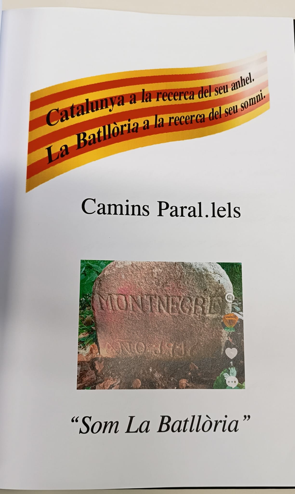

Estudiar
Recollir informació històrica, administrativa i legal abans de prendre posicions definitives.
Projecte
La plataforma treballa per posar en valor La Batllòria i estudiar, sense partidismes, quines opcions administratives poden reforçar la veu del poble.
El punt de partida
La Plataforma per La Batllòria neix de la necessitat d'obrir un debat serè sobre la identitat local, la representació institucional i les possibilitats de futur del poble.
Recollir informació històrica, administrativa i legal abans de prendre posicions definitives.
Reivindicar la identitat de La Batllòria amb respecte, dades i voluntat constructiva.
Explicar el debat a la ciutadania amb llenguatge clar i materials accessibles.
Manifest de treball
Treballem per preservar la memòria del poble, enfortir la participació veïnal i estudiar amb rigor si La Batllòria pot assolir una major autonomia o una independència administrativa respecte de Sant Celoni.
La plataforma no neix contra ningú. Neix a favor d'un poble que vol entendre millor la seva història i decidir el seu futur amb veu pròpia.
Qui som
Som un grup de veïns i veïnes de La Batllòria que, des de l'any 2026, ens hem organitzat per posar en valor la identitat del nostre poble, estudiar la seva realitat administrativa i obrir un debat serè sobre el seu futur.
El grup està format per persones amb trajectòries diverses, incloent veïns jubilats que aporten memòria, experiència i coneixement del territori.

Principis
Un llenguatge serè, respectuós i enfocat en solucions.
Un espai obert a sensibilitats diverses, sense vinculació partidista.
Cap proposta sense dades, informes, memòria històrica i assessorament.
La veu dels veïns ha de ser el centre del procés.
Historia de La Batlloria
Textos provisionals, preparats per substituir-los per contingut històric revisat.
La Batllòria ha crescut al voltant de camins, masies, activitat agrícola i relacions de proximitat.
Associacions, trobades i espais compartits han construït un sentiment de poble propi.
La plataforma vol estudiar aquesta relació amb dades, respecte institucional i perspectiva històrica.
La recollida de documents, fotografies i testimonis es clau per preservar allò que explica el poble.
Metode
Documents històrics, mapes, fotografies, testimonis i antecedents administratius.
Revisió amb persones coneixedores, experts i representants institucionals.
Sessions veïnals i materials divulgatius per explicar opcions i limitacions.
Redacció d'un document de conclusions quan el treball estigui prou madur.